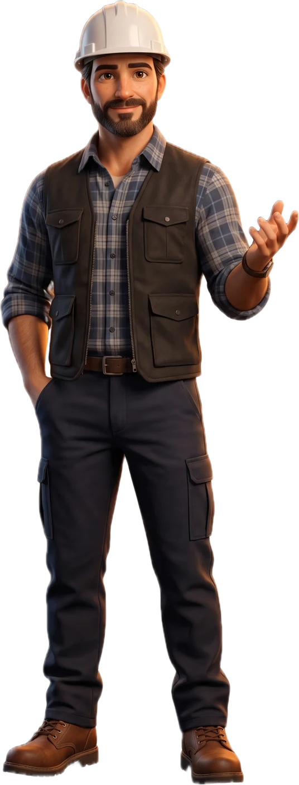

Offres Assistant commercialDevis, signature, relances
Assistant commercialDevis, signature, relances Assistante trésorerieImpayés et prévision
Assistante trésorerieImpayés et prévision Assistante clientRéponses et rendez-vous
Assistante clientRéponses et rendez-vous Assistant facturationFactures conformes 2026
Assistant facturationFactures conformes 2026 Assistante administrativeTri des mails et classement
Assistante administrativeTri des mails et classement Assistant chef de chantier BientôtPlanning, suivi, rapports
Assistant chef de chantier BientôtPlanning, suivi, rapports Assistant gestion de stock BientôtStocks, commandes, alertesVoir toutes les offresComment ça marcheTarifsSimulateurPourquoi TalosBlogEspace clientRéserver une démo
Assistant gestion de stock BientôtStocks, commandes, alertesVoir toutes les offresComment ça marcheTarifsSimulateurPourquoi TalosBlogEspace clientRéserver une démo
Une équipe sur mesure
Choisissez les assistants dont vous avez besoin. Ils prennent en charge les tâches qui vous prennent du temps, pendant que vous vous concentrez sur vos chantiers.
- 5assistants
- 15missions
- 99fonctionnalités
-
 Assistant Client
Il transforme vos demandes en opportunités.
Découvrir
Assistant Client
Il transforme vos demandes en opportunités.
Découvrir
-
 Assistant Commercial
Il prépare et suit vos devis.
Découvrir
Assistant Commercial
Il prépare et suit vos devis.
Découvrir
-
 Assistant Facturation
Il gère vos factures dès qu’un devis est signé.
Découvrir
Assistant Facturation
Il gère vos factures dès qu’un devis est signé.
Découvrir
-
 Assistant Trésorerie
Il vous aide à récupérer votre argent.
Découvrir
Assistant Trésorerie
Il vous aide à récupérer votre argent.
Découvrir
-
 Assistant Administratif
Il met de l’ordre dans votre boîte mail.
Découvrir
Assistant Administratif
Il met de l’ordre dans votre boîte mail.
Découvrir
-

Bientôt Assistant Chef de chantier Vos plannings tiennent. Vos comptes rendus s’écrivent seuls. En préparation - Bientôt Assistant Gestion de stock Vous savez ce qu’il reste et ce qu’il faut commander. En préparation
Le poste de commande est inclus, quel que soit l'assistant
Priorités du jour, synthèse de ce qui a été fait cette nuit, alertes et vision
centralisée : client, chantier, devis, facture et échanges au même endroit.
Vos assistants travaillent, vous ouvrez Talos le matin.
Réserver une démo